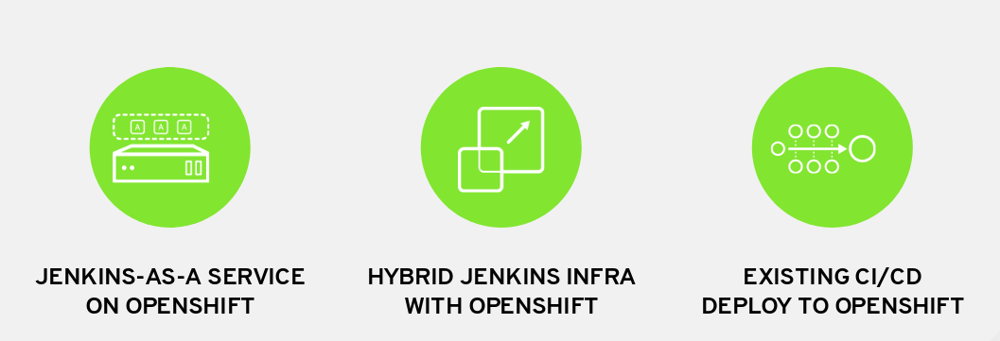
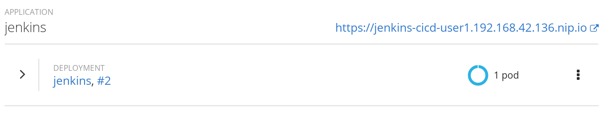
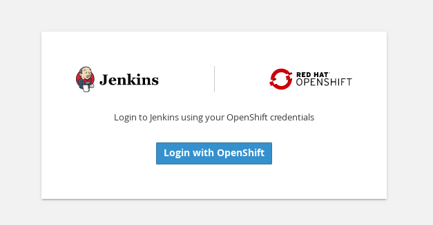
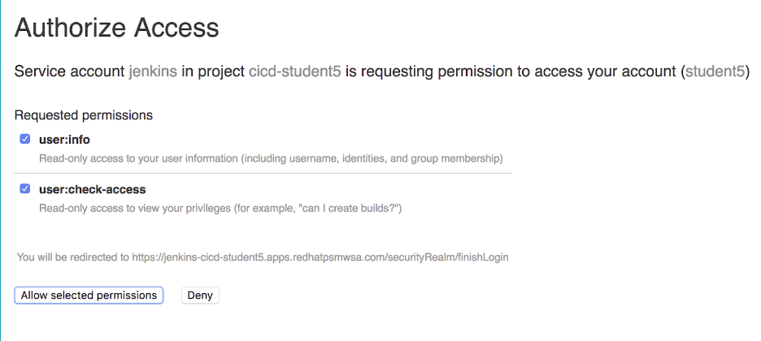
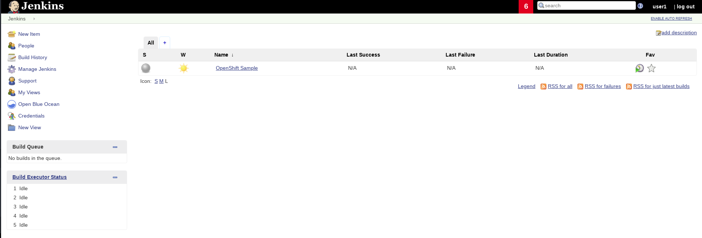

Jenkins can be integrated with OpenShift in 3 ways. Today, you'll be working with a containerized Jenkins Server that's fully integrated with OpenShift.

Go into your CI/CD project and find the running Jenkins Pod.
Click the external route (https://jenkins…) to go into your Jenkins Server

Click Login with OpenShift.
Login with your OpenShift Credentials. You maybe asked to accept authorizations. Go ahead and do so and re-login.

You will be asked to authorize access to the jenkins service account. Go ahead and Allow selected permissions.

You should now see the Jenkins Home Page

Jenkins follows a master/agent architecture. Your pipeline will run a process called a Jenkins executor. A Jenkins executor is one of the basic building blocks which allow a build to run on an agent (e.g. build server). Think of an executor as a single “process ID”, or as the basic unit of resource that Jenkins executes on your machine to run a build.